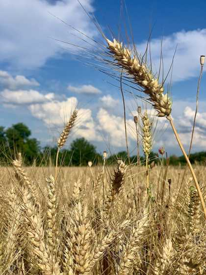
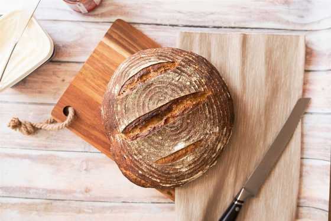
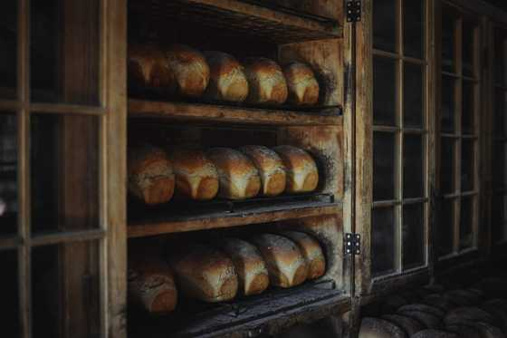
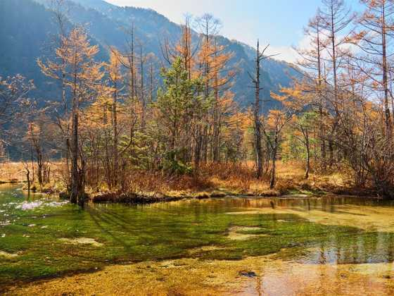
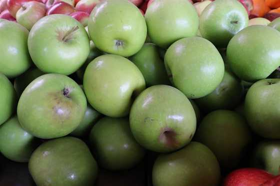
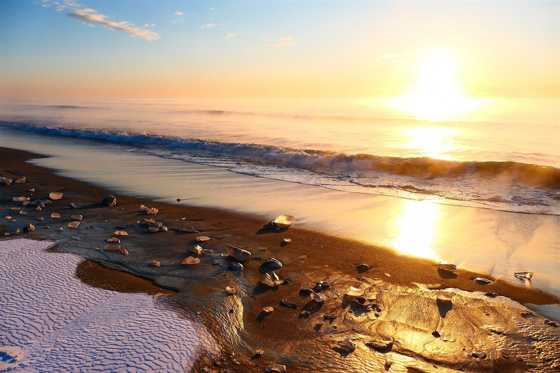

長野県塩尻市・玄米粉のパン
日々に寄り添う、
玄米のやさしい甘み。
ときのぱんは、玄米粉を使ったやさしく味わい深いパンを焼くパン屋です。「誰かに食べてもらいたくなる」パンを、毎日のそばに。
お店の想い
「日常に寄り添うパン作り」を目指して。
Instagramのプロフィールでは、ときのぱんを「優しく味わい深い玄米粉ぱんといろいろ」と紹介し、「誰かに食べてもらいたくなる」という言葉を掲げています。
2023年の地域メディアの記事(朝日村での取材)によると、店主の信時郁美さんは東京から移住して2022年8月にパン屋を開き、「日常に寄り添うパン作りを目指しています」と語っています。長野県産の玄米全粒粉と国産バターを使い、添加物はできる限り使わず、玄米のやさしい甘みともっちりやわらかな食感が特長とされています。あんこやクリームも手作りだそうです。
情報源: Instagram @tokino.pan/ウェブコマチ(2023年の記事)
上記記事の掲載時点の所在地は朝日村で、現在の所在地(塩尻市)とは異なります。現在の営業内容はInstagramでご確認ください。店名の意味は確認できていないため、掲載していません。これ以外の文章は制作側の表現です。


パンのこと
玄米粉のパンと、いろいろ。
Instagramでは玄米粉のパンのほか、さまざまなパンが紹介されています。2023年の記事では、食事系から菓子パンまで約13種類と季節のパンが並ぶと紹介されていました(当時)。
価格・メニュー詳細: 準備中





口コミ
こんな声が聞こえてきそうです。
以下は制作側が作成したイメージ例で、実在のお客様の声ではありません。
食パンがもっちりやわらかくて、朝ごはんが楽しみになりました。
やさしい甘みで、毎日食べても飽きない感じがします。
誰かに持っていきたくなって、つい多めに買ってしまいました。
ご案内
アクセス
| 所在地 | 長野県塩尻市広丘高出1935-6 |
|---|---|
| 電話 | 準備中 |
| 営業時間 | 準備中 |
| 定休日 | 準備中 |
| SNS | Instagram @tokino.pan |
営業日は変わることがあるため、最新情報はInstagramをご覧ください。


